Entries
View the collection of entries from Mental Health Hacks.
Narsio
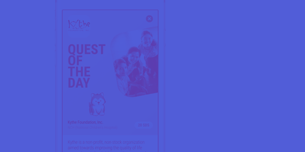
Designed by BitScript Technologies of Xavier School, the application prototype showcases an innovative way of providing resources to people with narcissism in Narsio.
Software (Prototype) NarcissismThe Will and Testament of Asher Adams
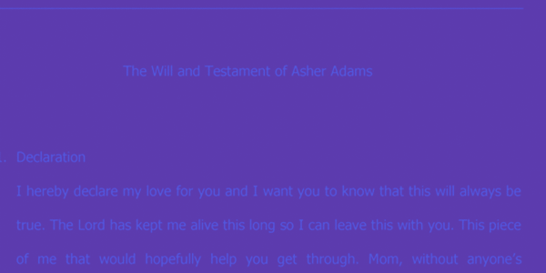
Written by Regina Mison, the Will and Testament of Asher Adams is a delve into the despondent hollow of the empty.
Creative Writing Grief and LossThe Silence of Holding On
Written and illustrated by Aleeza Kira Abinuman, "The Silsence of Holding On" is an hour after hour day experience of the feeling.
Poem and Illustration AnxietyWhen Alone
Master Siopao and Co. capture phobias in "When Alone," a cinematographic experience traveling to and through the sonder of lives.
Film PhobiasBelieve in Yourself
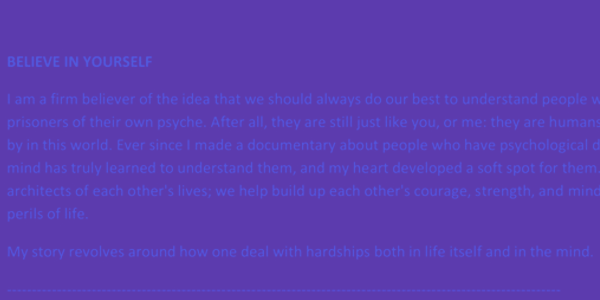
In "Believe in Yourself," Ramon Virrey explores the pang of panic disorders in both mind and body, and the story of survival that comes with all hurt.
Interactive Fiction Panic DisordersCaught Between
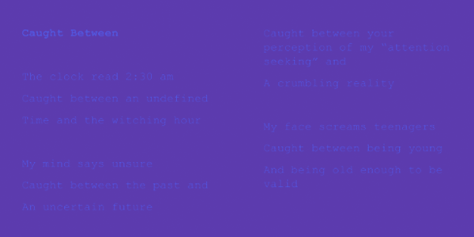
"Caught Between" explores the turn of the future, of life, and of everything known in a poem about teenagers by Rocio Castillo.
Creative Writing TeenagersShe Needs Help
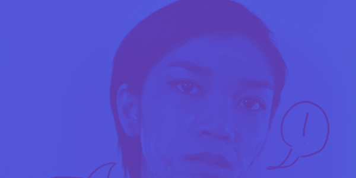
A blend of art and photography, Jacqui Reyes portrays the healing, corruption, and wave of feelings in Scizophrenia through "She Needs Help."
Gif SchizophreniaAnger Blinds
Taken by Gem Tan, "Anger Blinds" is a raw photo that depicts the blinding effects of anger through color, emotion, etc.
Photography AngerMiracle Cure
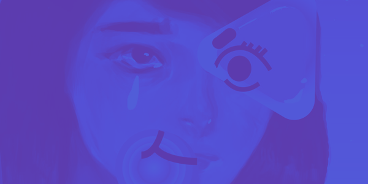
"Miracle Cure" is a colorful artwork by Corinne Sison that depicts one's unique experience with the effects of medication.
Illustration MedicationGo Leave

"Go Leave" is an original acoustic song written and sung by Hanna Padilla about the pain of being left behind by a loved one due to the other's mental illness.
Song RelationshipsStressBoard
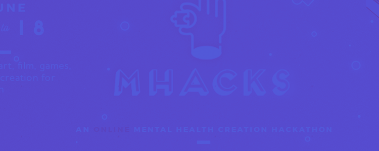
Designed and coded by Sugar Cubs, "StressBoard" is a website for those who need help in coping with anger or stress.
Website AngerLighthouse
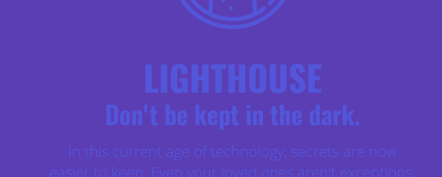
"Lighthouse" is a website made by Bianca Aguilar for a hypothetical security software which scans a family's devices for underlying secrets.
Website Family IssuesQjiel Mariano
Qijel Mariano's mend of anger is shared in essay, illustration, and photography as he tells of story in different mediums.
Essay, Illustration, and Photography AngerWildcard
"Wildcard" is an illustration on teenagers from Team Isinantabi minimally depicting the fragility in mind.
Illustration TeenagersMeatball
An unfinished, light kick towards LGBT issues -- Canp Tram presents an interactive fiction in the realm of high school life.
Interactive Fiction LGBT IssuesYou Are What You'll Be

"You Are What You'll Be" is a collective of poetry from Team Better Days tackling different gender issues. From the gentleness of "warm like flowers in the summer"...
Poems Gender IssuesBlue Dolphin
The Blue Dolphin website is Mega Minds' solution to LGBT issues; this exploration towards a platform for a community.
Website LGBT IssuesBottoms Up!
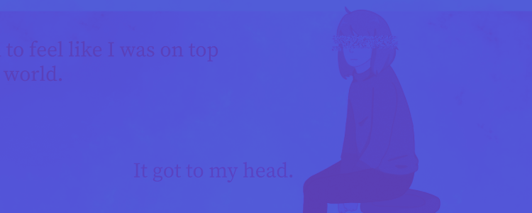
Written and designed by BGL.Signal, "Bottoms Up" is an interactive fiction describing eye-opening fear and dual diagnosis through the eyes of one girl.
Interactive Fiction PhobiasNever-ending War
Noleil's "Never-ending War" is a take on self-harm in soft melodic tunes, digging into self-harm in a confessional lull.
Song Self-harmPANIC
"PANIC" is a film by Felix Culpa that shows a variety of people undergoing the pressuring experience of a panic disorder.
Video Panic DisordersInvisible Burdens
In whimsical color, Isabella Hilario's light illustrations on adolescence and growth tell of the stories and pain behind coming-of-age and the rise of heart and spirit that comes in all inevitability in this video series.
Animated Comic AdolescenceLoneliness, Anxiety, Guilt
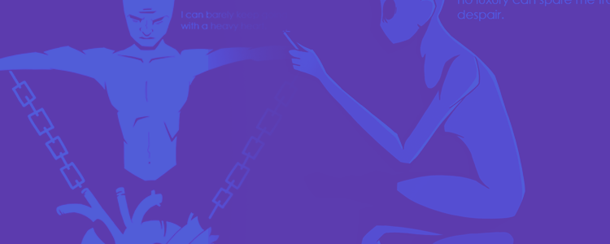
Drawn by Aaron Natividad, "Symptoms of Depression" is an illustration set composed of "Loneliness", "Anxiety", and "Guilt".
Illustration DepressionRemember Me
Team Rocket, in gorgeous amateur cinematography and sound is a film on the struggles of teenagers of different backgrounds.
Short Film/Video TeenagersHalina sa Hapagkainan
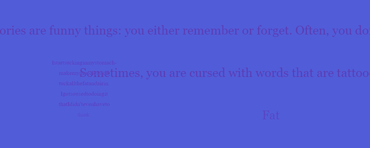
"Halina sa Hapagkainan" is a memoir on eating disorders, the crunch and twist of a body given up in growth, self-hatred, and loss of mind. A special award winner, this interactive fiction is a confessional vow towards the Filipino mental health struggle.
Interactive Fiction Eating DisordersLucid
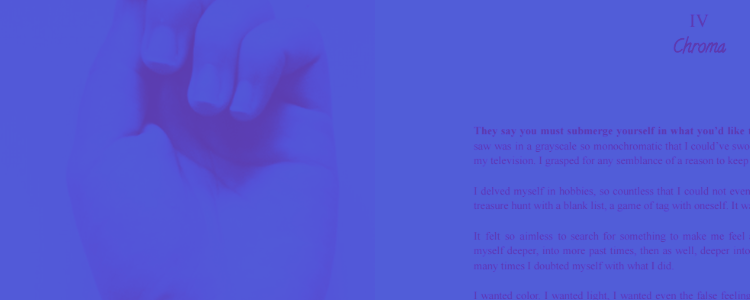
Given the Silakbo award, maraki; -- in photo, prose, and poetry, depicts both the fall, recovery, and stillness.
Photography + Text Self-harmIn Memory Of
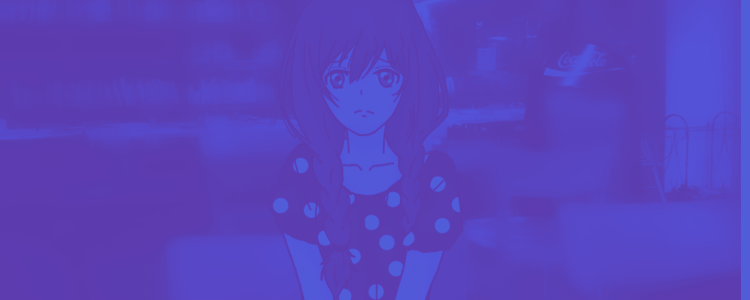
An interactive fiction, "In Memory Of" deals with a cold story on abuse, rival and telling of its hidden figures and captive nature.
Interactive Fiction AbuseScars and Scarring
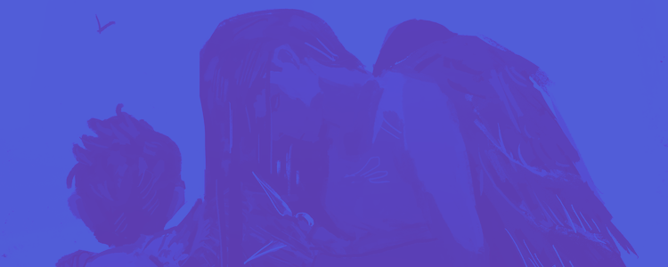
Gia Duran expresses the pangs of abuse in an illustration brooding of story, pain, and melancholy entitled "Scars and Scarring."
Illustration AbuseLe Temps Qui Passe
BGL.Tora's RPG Maker game on Grief and Loss revisits the phrase "only time can heal all wounds" in this solemn exploration.
Game Grief and LossAte Ryza
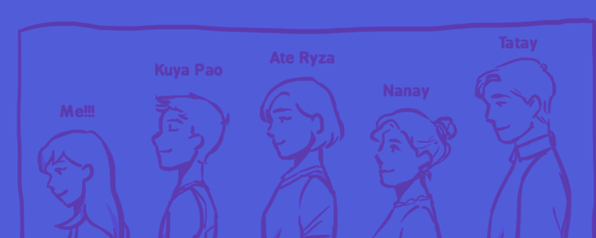
Dianne Axalan explores Ate Ryza in a short webcomic patterned with gorgeously simple illustrations that tell of a close Filipino tale, the bind of family and the healing that comes with understanding.
Illustration (Webcomic) SchizophreniaAnxiety Attack
Anxiety Attack is a colorful, winding delve into the frustration and loss of control brought about by an attack in the open. Maxine Yap's illustration is a blend of color, life, and jagged uncertainty.
Illustration AnxietySoul
"Soul" is Jasper Leyson's whimsical, soft capture on LGBT issues through song. Without lyric, the riveting life of woodwind, piano, and tranquil beats breathe life into the humanity of every LGBT person.
Song LGBT IssuesHalf of Me is Her
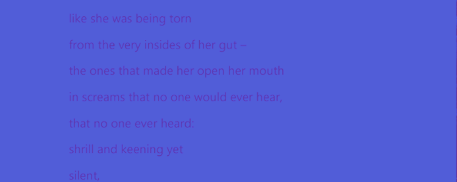
Amalgamated in a poetry and song is Trisha Esparanza's take on PTSD called "Half of Me is Her". Of pain, mind, and memory in lyric.
Poem, Song PTSDDeep Scars
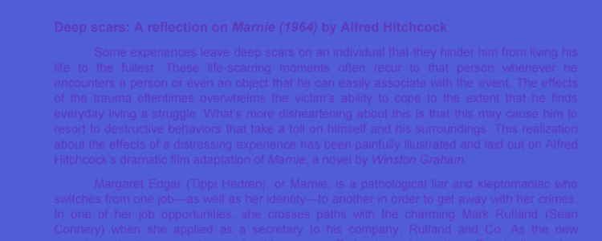
"Deep Scars" is Dara Eoy's take on trauma in literature. Reflecting on Marnie (1964) by Alfred Hitchcock, a dissection of Margaret Edgar reveals the workings of scar and past.
Writing Trauma23rd of September
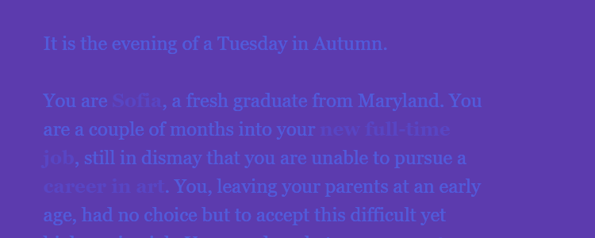
Three pieces of fried chicken showcase ADHD/ADD through an interactive fiction on the pacing of life, illness, and support.
Interactive Fiction ADHD/ADDMarie
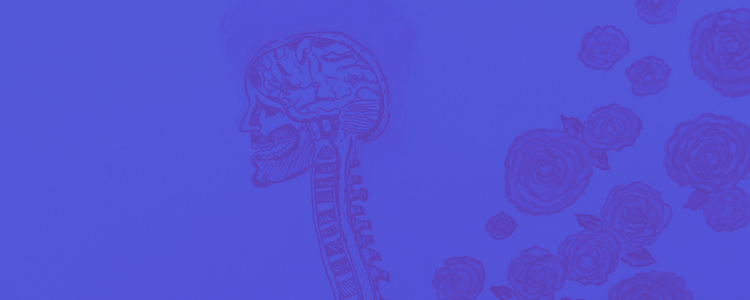
In simplicity, Clarence Cambas illustrates depression in his work titled "Marie" as a fleeting picture of soul, engorged in disillusion and loss of light.
Illustration DepressionFacade
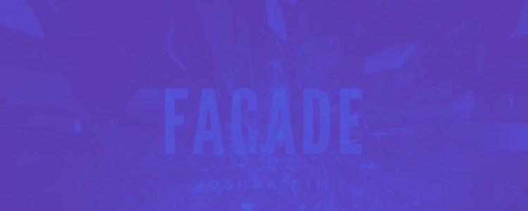
A winner of the special award, Paradigm Shift presents "Facade," a song on the issues of frustration, guilt, and abuse in a melody of release.
Song Abusejusque la
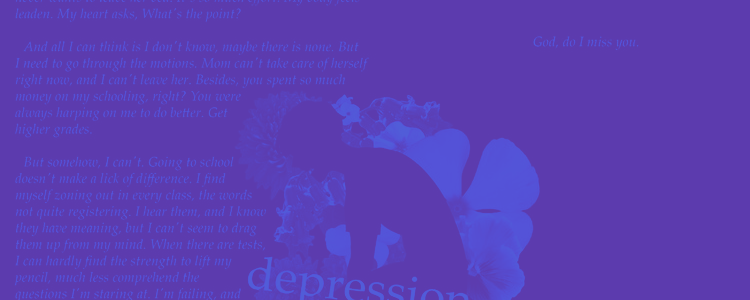
"jusque la" is Team Kaleidoscope's take on grief and loss; of growth, lack of self-control, and a spiral, a familiar story is expressed in art, word, and mind.
Illustration + Writing Grief and LossCan't breathe
Stress in its most vulgar and grimacing is indulged in through Jeri Cambas' "Can't Breathe" - of visuals and words, a portrait on the little build-up of everyday realities tip the edge.
Photography + Poetry Stress